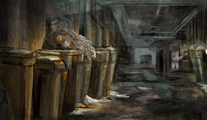

SHARE
SHARE

(852) 9876 5432警署總台
接聽
calling PC1234 ...
有屍體的兇案現場門外
有屍體的兇案現場門外
RESULT
正確答案
B) 保持現場安全，不被其他人出入
C) 聯絡CID（警方刑事調查隊）
等待CID（Criminal Investigation Department，刑事調查隊）到達命案現場
幾名CID到達現場
幾名CID到達現場
兇案現場
Question 5作為CID探員，你會最先選擇調查什麼？〔限時10秒〕〔可多選〕
A) 地板
B) 書架
C) 銀包
D) 垃圾桶
88:88
10:00
RESULT
正確答案
A) 地板
兇手可能會用漂白水消滅血跡，但血會滲入到各種物料之內。有些木板是透氣的，表面會有肉眼看不到的洞，血不多不少會滲在其中。另外如果死者血跡沒有流進地板，可能代表死者曾經被移動屍體
B) 書架
可能找到死者日記，說明死亡原因，或者與兇手發生的糾葛
C) 銀包
從死者身份證上可確認死者身份
D) 垃圾桶
兇器、犯罪證據都可能留在垃圾桶內
兇案現場
Question 6你可以帶備什麼作為你的調查工具？〔限時10秒〕〔可多選〕
A) 口罩
B) 白袍
C) 膠紙
D) 吸塵機
88:88
10:00
RESULT
正確答案
A) 口罩
警員唾液可能會污染現場，戴上口罩是負責任做法。現場很多人，如果每人說話都噴口沫，很難分辨哪些是兇手、哪些是警察
B) 白袍
調查人員會帶備如「太空衣」、只使用一次的服裝，避免破壞任何證物。所有進入兇案現場的人都需要穿上整件白袍，將自己包裝得像避孕套一樣
C) 膠紙
在死者身上貼膠紙，可以套取動物毛髮、花粉等線索
D) 吸塵機
警員如到達橫風橫雨的命案現場，可能需要立即掏錢到附近商場購買全新的吸塵機。因為風雨可能會令現場的毛髮吹走、流失。等化驗人員來，早就什麼都沒有了。警員需要取得各種控制樣本（Control Sample），以備日後呈堂，因此一部全新、沒有經過污染的吸塵機，可能是警員查案的好幫手
兇案現場
Question 7在命案現場外，警員最先去哪兒調查？〔限時15秒〕〔可多選〕
A) 附近主要通道
B) 附近垃圾桶
C) 閉路電視紀錄
D) 垃圾站

88:88
15:00
RESULT
正確答案
A) 附近主要通道
兇手的血跡可能在附近留下。另外如果屍體曾經被轉移地點，亦會從所經路徑發現血跡等線索
B) 附近垃圾桶
兇手可能會將作案工具丟在沿途的垃圾桶，調查垃圾桶可以發現兇手的逃走路線
C) 閉路電視紀錄
劉達強說，「如果犯人是『通渠大盜』（警察用語，指犯人由較大型的交通樞紐逃走），警方可以要求運輸署、稅務局、環保署、甚至機場保留錄影片段，因為可以從『天眼』（閉路電視攝錄系統）發現犯人蹤跡。」
D) 垃圾站
兇手可能會將作案工具丟在垃圾房